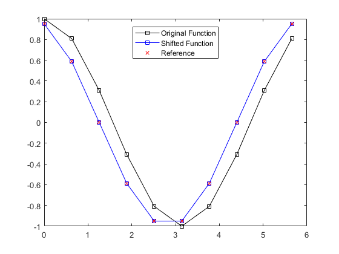

fourierShift
Resample data using a Fourier interpolant.
Syntax
data = fourierShift(data, shift)
data = fourierShift(data, shift, dim)
Description
fourierShift resamples the input data along the dimension dim using a regular grid that is offset by the non-dimensional distance shift. The resampling is performed using a Fourier interpolant. This function can be used to shift the acoustic particle velocity recorded by the first-order simulation functions to the regular (non-staggered) temporal grid by setting shift to 1/2.
dt = pi/5;
t = 0:dt:(2*pi - dt);
y = cos(t);
y_shift = fourierShift(y, 1/2);
y_ref = cos(t + dt/2);
plot(t, y, 'k-s', t, y_shift, 'b-s', t, y_ref, 'rx');
legend('Original Function', 'Shifted Function', 'Reference', 'Location', 'north');

Inputs
data |
input data |
shift |
non-dimensional shift, where 0 is no shift, 1/2 is for a staggered grid, and 1 is a full grid point |
Optional Inputs
dim |
dimension over which the signals vary in time (default = highest non-singleton dimension) |
Outputs
shifted_data |
shifted data |
See Also
gradientSpect